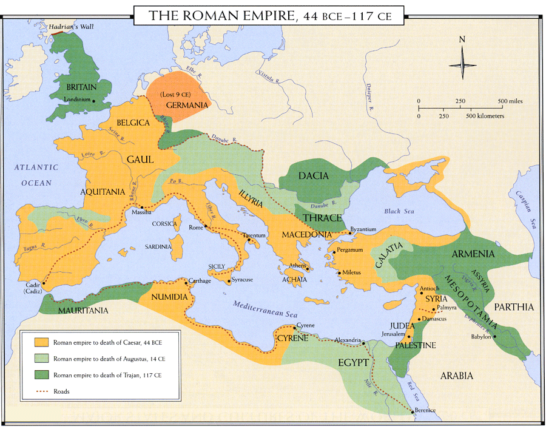
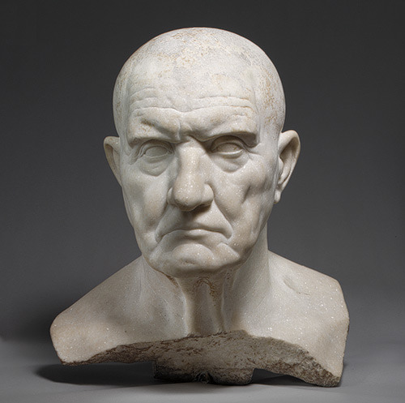
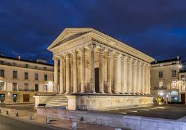
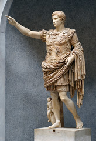
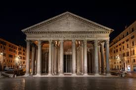
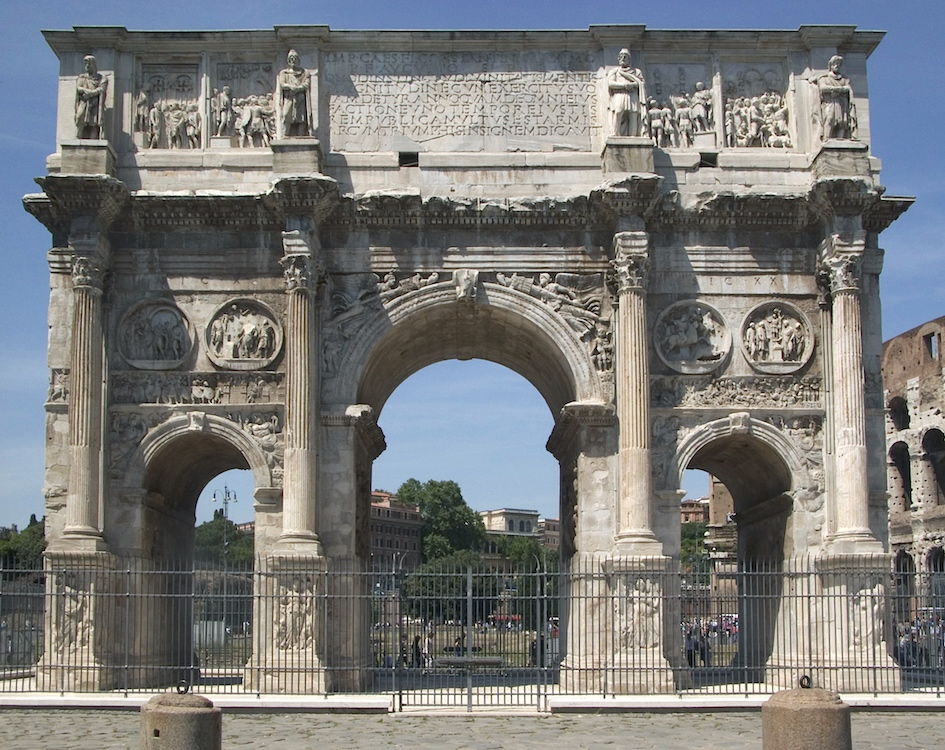

Rome
Rome is on the Mediterranean Sea. The land had forest and mountains. Romans made bread, porridge, and cereal from the grains they grew. These grains they grew where wheat, barley, rye, and oats. The fruit in Rome include figs, grapes, pears, plums, dates, cherries, and peaches. The vegetables in Rome include beans, lentils, peas, asparagus, mushrooms, onions, turnip, radishes, cabbage, lettuce, leek, celery, cucumbers, artichokes and garlic. Romans farmed and hunted for their meat and poultry. There were many different types of birds in Rome, some of these include quails, pheasants, woodcocks, doves, ducks, and many more. The animals the Romans farmed were deer, rabbits, boar, pig, and goat. They also fished in the Mediterranean Sea.
The Romans believed that the city was founded by the twins Romulus and Remus. Their mother was Rhea Silvia. She was supposed to practice celibacy, but she had Romulus and Remus. She was thrown in jail as punishment by her brother, the King Amulius and the twins were to be drowned. However, the servant does not drown them, instead he puts them in a basket, and they float to shore. On shore, there is a wolf. This wolf raises the baby twins. When their uncle dies, they are offered the throne. They decline and start their own city. Romulus and Remus fight over where to build the city. They try to settle their disagreement by counting how many birds they see at the location they want to build the city. They both say they won. Romulus builds his city walls and Remus makes fun of him. When the wall is done Remus jumps over it. Romulus is angered by Remus and kills him. That is the day that Rome was believed to be founded. The date was April 21, 753 BC.
Rome started out as a monarchy. The monarchy was overthrown, and the Roman Republic took its place. This happened in 509 BC. The Roman Republic had a senate of elderly men. The senate consisted of a dictator and a censor at the top. The dictator served for only six months. The censors where retired consols and served for 4-5 years. There were two consols which were the head of the military and civil matters. The sentus had 300-600 members and were old men. Part of the sentus were patricians, which were the descendants of the original rulers. The other part were plebeians who were not part of that descendant line. Next, there was the praetor who were similar to the consuls, but they were in change of laws. The Roman Republic was overthrown by Julius Cesar. He was soon killed and his son Augustus became ruler in 30 BC. He does this by saying he will re-establish a part of the government. He was also young, and the republic rulers were old men. He turns the power to himself, making him an emperor and making the senate have no power.
The first Roman religion was Roman Mythology. These gods were similar to the Greeks gods. The main god was Jupiter who was similar to Zeus. There was Neptune who was similar to Poseidon. The roman mythology also included Hercules. Later the religion changed to Christianity. This happened because of all the foreigners that came to Rome.
Artwork
Portrait of Patrician:
The Portrait of Patrician was made in the Republican period. It is a sculpture of a male ruler’s head. It is realistic to show his ancestry and real features.
Maison Carree:
The Mason Carree was made during the Empire. It was a temple located in Nimes, France. It has a porch, columns all around the outside, frontal axial orientation, and on a high podium.
Augustus of Primaporta:
The sculpture of Augustus of Primaporta was made during the Empire. Many copies were made and sent throughout Rome so the people could know what the emperor looked like. One was found in his wife’s, Livia, villa in Prima Porta. The sculpture was the ideal version of Augustus. He was younger, more handsome, and more athletic.
Colosseum:

The Colosseum was made in 80 AD during the Empire. It could seat 50,000 people. In between the arc on the second and third levels were statures of gods and goddesses. The structure was very advanced. It had undergrown passageways, trap doors, drainage pipes, and a retractable roof.
Pantheon:
The Pantheon was a dome like structure. It was made to honor Roman gods. Emperor Hadrian commissioned it. It was made during the Empire in 125 AD. It was made of 5,000 tons of concrete, 142 feet in diameter, and 72 feet in height. The top of the dome has an opening. This opening is to let light in and draw one upwards to heaven.
The Tetrarchs:

The Tetrarchs was made during the late Empire. It was two stones on the side of a church. They were added later because they are a different color. There are four figures shown. Two are senior emperors and the other two are junior emperors.
Arch of Constantine:
The Arch of Constantine was made during the late Empire. It made to celebrate a military victory over a Roman rival. The artwork on it shows the victory. There are four panels on both sides with friezes on them. There are four on both side roundels, which are friezes in the shape of a circle. The columns on the Arch are Corinthian style.